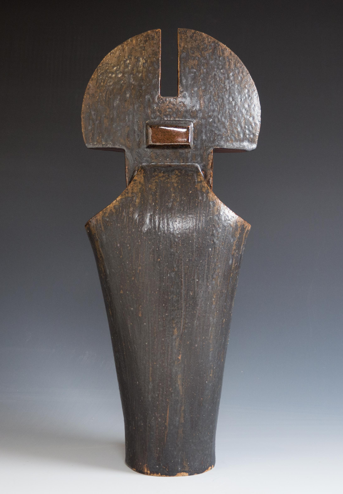

Copper Compounds Toxicology
- Introduction :
- This metal is red, brownish, ductile and malleable, and has excellent electrical and thermal conductivity. Copper is an essential element; it is transported in the serum linked to ceruloplasmin.
- The
compounds used by potters are :
- -black copper oxide,
- -red copper oxide,
- -basic copper carbonate,
- -copper sulfate pentahydrate.
- Sources and Production :
- I-Chemical Forms :
- -black copper oxide,
- Copper forms two (2) series of
compounds :
- copper (I) (cuprous) and copper (II) (cupric) compounds.
- Metallic copper is fairly resistant to corrosion and is not attacked by dry air, water, or nonoxidizing acid.
- Copper I oxide (Cu2O) occurs naturally as the reddish mineral cuprite.
- Copper II oxide is black and is obtained by heating copper metal in air.
- In moist air, copper becomes coated with green basic carbonate.
- II-Uses and Sources of Exposure :
- Copper was the first metal used by humans and appears to have been discovered on the island of Cyprus around 2500 BC.
- Copper salts have been used therapeutically for more than 2,000 years, copper sulfate has clinically been used as an emetic, and it was also a popular murder weapon and abortifacient in France in the 19TH century.
- Chile, the USA, Canada, and Russia are the principal producers.
- Mined ores of copper are concentrated by a flotation process and then are refined. Smelting consists of applying sufficient heat to concentrate the metal and fuse remaining gangue (waste ore) into slag.
- A-Uses :
- Copper is used :
- - in the production of a large variety of alloys having multiple applications ;
- · brass: contains mainly copper and zinc,
- · bronze: contains mainly copper and tin,
- · various alloys with silver, cadmium, beryllium, nickel...
- - in the electrical industry;
- - in the construction industry: gas lines...
- - in pigments such as emerald green, in ceramic glazes, and as
- a salt in the lithographic process.
- -as pesticides (seeds and vineyards) in the form of salts, like the Bordeaux solution based
- on copper sulfate.
- -copper sulfate is also used in the whitewashing and leather industry.
- -etc.
- B-Environmental exposure :
- It occurs primarily from ingestion of drinking water with high copper concentrations and accidental or intentional ingestion of copper salts.
- Clinical Toxicology :
- I-Routes of exposure :
- copper (I) (cuprous) and copper (II) (cupric) compounds.
- Copper is an essential element in
mammalian systems. Ilness occurs when diet is
deficient or intake is excessive.
- The principal route of exposure is through ingestion, but inhalation of copper dust and fumes occurs in industrial settings.
- Toxicity has resulted from treatment of burns using topical copper compounds.
- Copper has been reported to be absorbed internally from prostheses, intrauterine devices, hemodialysis units using copper-containing equipment, and copper azide impregnation of the skin after an explosion.
- II-Absorption, Metabolism, and Elimination :
- A-Absorption :
- The daily copper requirement has been estimated at 30 micrograms/kg of body weight for an adult. After ingestion, maximum absorption of copper occurs in the stomach and jejunum.
- Copper is bound initially in the serum to albumin and transcuprein, then later is bound more firmly to ceruloplasmin, which binds more than 75% of circulating copper.
- Absorption is increased in copper deficiency and is impaired in small-bowel disease.
- Copper is distributed throughout the body but is stored primarily in liver, muscle, and bone.
- The normal concentration of copper in blood plasma is 1 mg/liter.
- In all mammals, copper is an essential trace element involved in :
- -fundamental cellular respiration,
- -free radical defense,
- -connective tissue synthesis,
- -iron metabolism,
- -neurotransmission.
- B-Metabolism :
- Absorbed copper is initially bound to albumin and is transported from the gastrointestinal tract to the liver where it is transferred to ceruloplasmin.
- Urinary excretion is enhanced by increased molybdenum intake, cirrhosis, and biliary obstruction.
- C-Elimination :
- Copper is eliminated principally through the feces after excretion into the bile. Urinary excretion of copper is low in humans.
- Healthy adults have urinary concentrations of less than 100µg per 24 hours.
- III-Symptoms and Clinical Signs :
- A-Acute Toxicity :
- 1-Gastrointestinal Tract :
- Because copper is an essential element, toxicity is uncommon, as with all essential elements.
- Most reports of acute toxicity are from suicidal attempts from ingesting copper sulfate. However, death is rare, owing to copper sulfate's emetic properties :
- a-Mild forms
- Mild forms of poisoning produce only :
- -nausea,
- -vomiting,
- -diarrhea,
- -malaise.
- They have been described in patients poisoned by eating or drinking from copper-containing vessels or from a soft-drink dispenser.
- The principal route of exposure is through ingestion, but inhalation of copper dust and fumes occurs in industrial settings.
- b-Severe poisoning :
- Copper sulfate ingestion produces a severe inflammation of the gastrointestinal tract, an amount of 10 g of the sulfate is sufficient to cause these gastrointestinal symptoms :
- -pain,
- -nausea,
- -vomiting,
- -diarrhea,
- -malaise,
- -hematemesis,
- -melena,
- Also, the following are encountered :
- -convulsions,
- -dehydration,
- -shock,
- -hemolysis,
- -liver and kidney necrosis.
- Patients who developed intense jaundice from liver centrolobular necrosis after massive acute copper sulfate poisonning had a more fulminant course than did patients with milder jaundice from intravascular hemolysis.
- The oxydule or the basic carbonate can also cause the intoxication at the same dose.
- By ingestion, copper sulfate pentahydrate is only moderately toxic to humans.
- Gastrointestinal effects, including anorexia, nausea, and occasional diarrhea, have been attributed to swallowing copper dust.
- 2-Eye :
- Chalcosis corneae is the impregnation of the eye with elemental copper or copper alloys. This brownish or greenish-brown discoloration of the cornea, lens, or iris may occur after penetrating injuries with copper fragments.
- Copper sulfate, copper acetoarsenite, and verdigris cause irritation and inflammation but no permanent damage.
- Copper chloride and copper cyanide plating bath can cause severe reactions and permanent opacifications.
- Transient irritation of the eyes has followed exposure to a fine dust of oxidation products of copper produced in an electric arc.
- 3-Respiratory Tract :
- Typical metal fume fever is characterized by :
- -nasal congestion,
- -fever up to 39 C,
- -chills,
- -malaise,
- -aching muscles,
- -dryness in the mouth and throat,
- -headache,
- -shortness of breath,
- -leucocytosis up to 12,000 to 16,000.
- The symptoms generally develop after repeated exposure during the work week, tending to diminish toward the end of the week, only to return more prominently on reexposure after the weekend. This phenomenon has led to the term Monday morning fever.
- All symptoms resolve after removal from exposure.
- The illness is postulated to result from immune mechanisms, but no report of chronic toxicity.
- Inhalation of copper salts may cause irritation of the respiratory tract.
- Inhalation of copper fumes may cause nausea, metallic taste, and discoloration of the skin and hair.
- 4-Renal System :
- Kidney abnormalities have been observed after copper sulfate ingestion.
- Hematuria, rising blood urea nitrogen, and oliguria were frequently observed in a large series of poisonnings. A picture of acute tubular necrosis was observed on urinalysis and renal biopsy.
- Intravascular hemolysis but not hypertension, preceded developement of acute tubular necrosis.
- 5-Neurologic System :
- No evidence substantiates neurologic injury from acquired copper toxicity.
- Coma observed in acute copper sulfate poisoning probably results from uremia.
- 6-Hematologic System :
- Hemolytic anemia accompanies severe copper sulfate poisoning and additionally follows burn treatment with copper sulfate and hemodialysis using copper-containing dialyzing equipement.
- Hemolytic anemia also occurs sporadically in Wilson's disease, the hemolysis is precipitous in these situations.
- B-Chronic Toxicity :
- In rats, degenerative modifications in the liver and the kidney have been described in animals receiving, in a chronic manner, copper salts by ingestion (more than 4,000 ppm in foodstuffs).
- In man, the same modifications (eventually accompanied by encephalopathy) have been described mainly in patients suffering from Wilson's disease.
- Chronic disease from excessive copper storage is epitomized by Wilson's disease, an inherited, autosomal recessive error in copper metabolism. This disease is characterized by excess copper deposition in most organs, especially the liver, kidneys, brain, and eyes.
- It is characterized by a diminished capacity to eliminate copper via bile.
- Wilson's disease also termed hepatolenticular degeneration, owing to the prominent effects on the liver (cirrhosis) and eye. Chelating treatment with D-penicillamine gives excellent therapeutic results while the preferred maintenance treatment is 150 mg of zinc orally per day.
- High copper content in drinking water and food may contribute to the development of severe liver damage (cirrhosis) in infants.
- 1-Skin :
- Copper causes a greenish coloration of skin, nails, hair and teeth.
- Contact dermatitis (copper itch) due to copper is rare and its occurrence can be substantiated by careful patch testing.
- Eczematous dermatitis and urticaria have been associated with the use of copper intrauterine devices.
- 2-Eye :
- The penetration of copper particles in the eye was responsible for cataract.
- 3-Respiratory System :
- Chronic recurrent inhalation of copper fumes and dust can lead to nasal septal perforation
- Chronic exposure to copper dust and fumes in the industrial setting can lead to upper respiratory complaints and physical findings in workers.
- Long-term exposure to dust in copper refining was not associated with chronic obstructive disease or small airway disease.
- The higher incidence of respiratory cancer reported in copper smelters is due to the presence of arsenic in the ore.
- 4-Vineyard Sprayer's lung :
- Vineyard sprayer's lung disease occurred when Bordeaux solution (1 to 2% solution of copper sulfate neutralized with lime) was chronically sprayed by Portuguese vineyard workers.
- These workers developed interstitial pulmonary disease including :
- -histiocytic granulomas,
- -associated nodular fibrohyaline scars containing abundant copper.
- The clinical picture is characterized initially by general symptoms :
- - weakness,
- - loss of appetite,
- - loss of weight;
- - dyspnea and cough.
- Micronodular or reticulonodular lung infiltration, especially in the lower fields, is the most frequent radiological image encountered. The evolution is variable: stabilization or regression or evolution towards a pseudotumoral form as in arthracosilicosis.
- A high incidence of adenocarcinoma, particularly alveolar cell carcinoma, was observed.
- Extensive liver damage was also noted. Biopsies revealed fibrosis, micronodular cirrhosis angiosarcoma, and portal hypertension.
- C-Teratogenesis :
- No teratogenic effects attributed to copper have been observed in humans.
- D-Carcinogenesis :
- With the exception of adenocarcinoma of the lung and angiosarcoma of the liver seen in patients with vineyard sprayer's lung, no evidence corroborates carcinogenesis from copper exposure.
- IV-Management of Toxicity :
- A-Clinical Examination :
Careful history taking is essential to diagnose copper poisoning in acutely ill patients.
- The history should contain questions relevant to intentional poisoning with copper salts and to ingestion of food and drink, especially acidic beverages or alcohol prepared in copper-containing vessels. Persons acutely poisoned by copper (especially copper sulfate) should be evaluated initially for nausea, vomiting, and diarrhea. Blue-green vomitus is diagnostic.
- Investigation for abnormal liver and renal function and hemolytic anemia should be conducted.
- Vital signs and urine output should be conducted for hypotension and oliguria.
- The medical history is also cornerstone of investigating dermatits suspected to arise from copper. Inquiry as to exposure to copper salts at work, use of copper-containing jewelry, or use of copper intrauterine device should be conducted. Patch testing may be necessary to confirm the diagnosis.
- A history of delayed onset of fever, chills, shortness of breath, and malaise after exposure to copper fumes should lead to the suspicion of metal fume fever. Fever, rigorous chills, diaphoresis, and wheezing may be noted on physical examination.
- B-Laboratory Diagnosis :
- 1-Severe copper sulfate poisoning :
- Laboratory findings in severe copper sulfate poisoning include :
- -abnormal hepatocellular function,
- -hyperbilirubinemia (both direct and indirect),
- -elevated blood urea nitrogen,
- -elevated creatinine,
- -hematuria and cellular casts on urinalysis,
- -anemia,
- -positive stool guaiac,
- -elevated serum copper,
- -elevated ceruloplasmin.
- 2-Metal fume fever :
- Findings during episodes of metal fume fever include :
- -leukocytosis,
- -abnormal pulmonary function study results :
- -small airway obstruction,
- -reduced lung volumes,
- -reduced carbon dioxide diffusing capacity.
- -abnormal chest X-ray :
- -peribronchiolar cuffing,
- -hazy infiltrates.
- -elevated urine copper levels.
- C-Treatment :
- Copper sulfate ingestion produces a severe inflammation of the gastrointestinal tract, an amount of 10 g of the sulfate is sufficient to cause these gastrointestinal symptoms :
- Removal from exposure is often
sufficient to resolve most ilnesses associated with
copper toxicity.
- 1-Severe acute poisoning by ingestion :
- In severe acute poisoning by ingestion, emesis should not be induced and rarely is necessary, owing to spontaneous vomiting.
- Dilution with 4 to 8 ounces of milk or water is indicated after ingestion or prior to gastric lavage. After any seizure activity is controlled, gastric lavage may be indicated.
- If necessary to prevent further absorption, activated charcoal may be administered and followed by a cathartic.
- In symptomatic patients, either intravenous calcium disodium-ethylenediaminetetraacetic acid or intramuscular dimercaprol should be given as soon as possible.
- D-Penicillamine may be given after initial treatment with dimercaprol. Hemodialysis alone is not effective.
- 2-Eye injuries :
- Treatment of eye injuries includes vigorous irrigation with normal salin. Ophthalmologic referral is indicated for severe elemental copper, copper chloride or copper cyanide plating bath injuries to the eye.
- 3-Metal fume fever :
- Treatment is symptomatic and removal from exposure may be sufficient.
- 4-Dermatitis :
- Removal from exposure may be sufficient but application of topical corticosteroid preparations may be required.
- 5-Green hair :
- Green hair from exogenous copper can be treated effectively with shampoos containing D-penicillamine.
- V-Biological Monitoring :
- The
normal concentration of copper in blood plasma is 1
mg/liter.
- Ninety-five percent (95%) of the copper in plasma is in ceruloplasmin but, it is one of the acute-phase reactant proteins and it increases in acute and chronic inflammatory conditions. It is elevated also in patients taking estrogens and birth control pills and in those who are pregnant or have cirrhosis, cancer, or thyrotoxicosis.
- Erythrocytes also contain a significant portion of the copper found in blood in the form of an enzyme, superoxide dismutase.
- Increased serum concentrations of copper are found in individuals with such liver diseases as primary cirrhosis and other cholestatic diseases.
- At air concentrations near current exposure limits, biological monitoring is not warrented. Biological limit values cannot be established, owing to lack of reliable exposure dose, and effect relationship.
- VI-Occupational, Environmental Regulations, and Dietary Recommendations :
- A-Occupational :
- 1-The VEMP in Quebec for copper dust and mist is :
- 1mg/m3 expressed as copper
- 2-The VEMP for copper fumes is :
- 0.2mg/m3 expressed as copper.
- B-Environmental :
- The EPA (USA) has determined that lake and stream water should contain no more than 1 ppm, and drinking water no more than 1.3 ppm.
- C-Dietary :
- The National Academy of Sciences (USA) recommends 2 to 3 mg of copper per day as a safe and adequate intake for adults.
- VII-Environmental Fate and Transport :
- Ninety-five percent (95%) of the copper in plasma is in ceruloplasmin but, it is one of the acute-phase reactant proteins and it increases in acute and chronic inflammatory conditions. It is elevated also in patients taking estrogens and birth control pills and in those who are pregnant or have cirrhosis, cancer, or thyrotoxicosis.
- Copper is found in the earth's crust
at approximately 70 ppm and in sea water at 0.001 to
0.002 ppm. Mining and smelting are the primary
anthropogenic sources.
- Acidic soil conditions contribute to solubility and increased transport, although appreciable mobilization occurs only at pH less than 3 in organic soils.
- Low pH and the passage of soft water through copper pipes can produce high levels in drinking water; however, only 1% of U.S. drinking water samples exceed the U.S. Environmental Protection Agency's standard.
- VIII-Environmental and Occupational Monitoring :
- Acidic soil conditions contribute to solubility and increased transport, although appreciable mobilization occurs only at pH less than 3 in organic soils.
- Copper fume and dust levels should be
measured to ensure compliance with local
standards.
- Remonitoring should be performed after any changes in work practices or plant processes that could cause a rise in air concentrations.
- For patients suspected of having non-occupational overexposure to copper, an environmental investigation should be conducted including measuring copper :
- -in drinking water,
- -in non-prescription remedies and supplements,
- and investigating dietary practices such as drinking acidic beverages fron copper-containing vessels.
- Contact dermatitis due to copper is rare. However, its occurrence can be substantiated by careful patch testing. Exzematous dermatitis and urticaria have been associated with the use of copper intrauterine devices.
- Greenish discoloration of the hair has been seen in blond or lightly pigmented individuals exposed to copper dust or copper-tainted water used for shampooing or swimming.
- IX-Prevention :
- Copper compounds used by potters are not considered much hazardous if there is no ingestion of basic copper carbonate and/or the sulfate.
- In glazes, copper enhances lead leaching.
- Good studio housekeeping is always good practice. Avoidance of processes
- generating unnecessary dust is also important and the wearing of an approved
- dust mask when the exposure seems hazardous is also good practice.
- References :
- Remonitoring should be performed after any changes in work practices or plant processes that could cause a rise in air concentrations.
- 1-Occupational Medicine,Carl Zenz,
last edition.
- 2-Occupational & Environmental Medicine,Joseph Ladoue, last edition.
- 3-Clinical Environmental Health and Toxic Exposures, Sullivan & Krieger; last edition.
- 4-Sax's Dangerous Properties of Industrial Materials, Lewis C., last edition.
- 5-Toxicologie Industrielle et Intoxications Professionnelles, Lauwerys R. last edition.
- 6-Chemical Hazards of the Workplace, Proctor & Hughes, 4th edition.
By Edouard Bastarache
Related Information
Black ash glaze for 20% raw metal pigments: Suitable for functional ware?

This picture has its own page with more detail, click here to see it.
This glaze is 49% Wood Ash, 24% Soda Feldspar and 27% Ball Clay. 10 copper carbonate and 10 manganese dioxide are added to that. This beautiful sculpture was made by Dan Ingersoll, aesthetically this glaze is perfect for it. But there are two red flags here. Significant manganese and copper metal fumes are certain to be generated at cone 10 (they are seriously not healthy) so anyone using this must be very careful. But there is something much more serious - this glaze is being used on functional ware. Copper is well known to destabilize other metals in the fired glass. This 10:10 combination is a perfect storm for leaching heavy metal into food and drink. This is not an argument for the use of commercial glazes, it is one for common sense application of the concept of limit recipes.
Links
Typecodes Article by Edouard Bastarache
Edouard Bastarache is a well known doctor that has written many articles on the subject of toxicity of ceramic materials and books on technical aspects of ceramics. He writes in both English and French.Materials Copper Oxide Red
Materials Copper Oxide Black
The purest source of CuO copper oxide pigment used in ceramic glazes.Materials Copper Carbonate
A source of CuO copper oxide used in ceramic glazes to produce a variety of colors (used only or with other colorants).Materials Copper Carbonate Basic
This form of copper carbonate is the article of commerce, a mixture of theoretical copper carbonate and copper hydroxide.Materials Copper Hydroxide
Hazards Copper Oxide and Carbonate

PayPalNo tracking, No ads, No paywall, No transient content!
Just organized, concise information constantly updated and improved.
Was this helpful? Consider supporting me.Got a Question?
Buy me a coffee and we can talk


https://digitalfire.com, All Rights Reserved
Privacy Policy - 2-Occupational & Environmental Medicine,Joseph Ladoue, last edition.